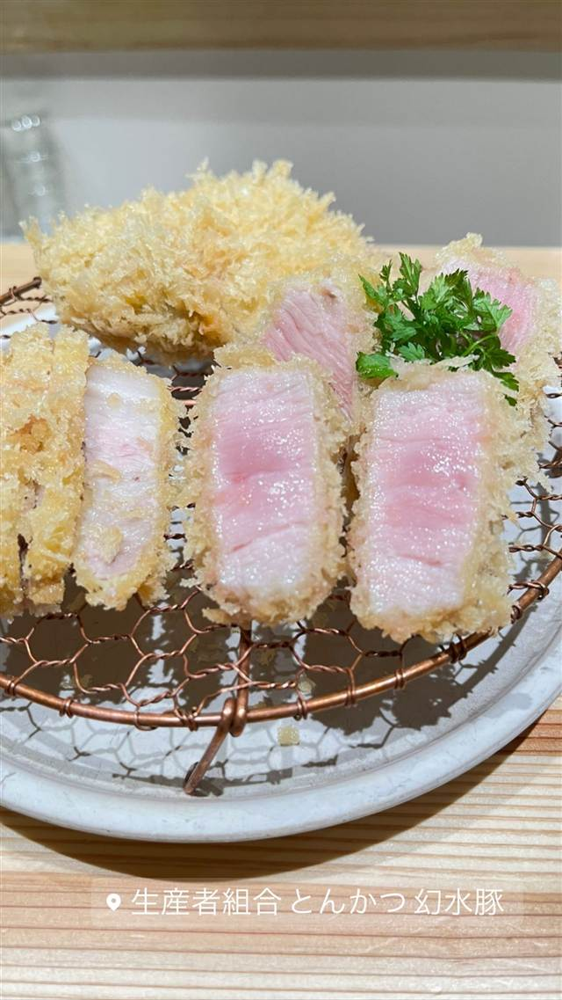

とんかつ武信 代々木上原店
川崎の本店からのれん分け、米油で揚げる特ロースかつと醤油かつ丼
武信
代々木上原の「とんかつ武信」は、川崎・生田の本店から2006年にのれん分けして誕生。千葉県産の厳選豚肉を米油で揚げる特ロースかつや名物の醤油かつ丼が評判で、ミシュランガイドのビブグルマンにも2年連続で選ばれている。
TRIVIA
豆知識
- 川崎・生田の本店からのれん分けして2006年に代々木上原店が誕生した
- 豚肉だけでなく揚げ油・パン粉・お米・糠漬けまですべてに独自のこだわりを持つ
- ミシュランガイドのビブグルマンに2年連続で選ばれている
REVIEWS
世間の評判
3.66食べログ
醤油かつ丼の味とコスパの良さ
- 衣はサクサクで肉はジューシーだという評価が食べログの口コミで多く見られる
- 名物の醤油かつ丼は大根おろしとの相性が良くあっさり食べられると評価されている
- キャベツとご飯がおかわり無料でランチもディナーも同料金だと評価されている
- 予約不可のため休日は5〜10分ほど並ぶこともあるという声がある
食べログ・ホットペッパー 口コミ1194件
| 創業 | 本店は1975年7月、神奈川県川崎市（生田駅近く）に開業。代々木上原店は2006年にのれん分けで開業。 |
|---|---|
| 系譜 | 川崎・生田の「とんかつ武信」本店からののれん分け。二代目が20代の頃、父の店で修行し、2006年に代々木上原の地に独立開業した。 |
| 看板 | 特ロースかつ、名物の醤油かつ丼 |
| こだわり | 千葉県産の厳選豚肉を使用し、米油で揚げることで脂の甘みと柔らかい食感を実現。豚肉だけでなく揚げ油・パン粉・お米・糠漬けまですべてにこだわる。 |
| 掲載・評価 | 2015年・2016年と2年連続でミシュランガイドのビブグルマンに選出。食べログ「とんかつ百名店」にも掲載。 |
| どこから | 都心 |
| 営業時間 | 月・火 休み 水〜日 11:30-15:00、17:30-21:30 |
| 予算 | 昼 ¥1,000～¥1,999 夜 ¥1,000～¥1,999 |
| 場所 | 代々木上原 東京都渋谷区西原3-1-7 |
| メモ | 代々木上原駅から徒歩3分。落ち着いた雰囲気で一人利用からグループまで対応。 |
食べたもの：カツ丼定食
NEARBY
近い店・同じ系統の店
-
 ★
二郎系(インスパイア) 東北沢駅／駒場東大前駅
千里眼（センリガン）
夏季限定の冷やし中華も人気の二郎系インスパイア
昼 ～¥999 夜 ～¥999
★
二郎系(インスパイア) 東北沢駅／駒場東大前駅
千里眼（センリガン）
夏季限定の冷やし中華も人気の二郎系インスパイア
昼 ～¥999 夜 ～¥999
-
 ブランチ 代々木上原
GOOD TOWN BAKEHOUSE
ベリーたっぷりパンケーキとプリンが名物のベーカリーカフェ
昼 ¥1,000～¥1,999 夜 ¥3,000～¥3,999
ブランチ 代々木上原
GOOD TOWN BAKEHOUSE
ベリーたっぷりパンケーキとプリンが名物のベーカリーカフェ
昼 ¥1,000～¥1,999 夜 ¥3,000～¥3,999
-
 とんかつ 両国
とんかつ はせ川 両国店
大門の名店『むさしや』仕込み、三元豚のとんかつがビブグルマン4年連続
昼 ¥1,000～¥1,999 夜 ¥2,000～¥2,999
とんかつ 両国
とんかつ はせ川 両国店
大門の名店『むさしや』仕込み、三元豚のとんかつがビブグルマン4年連続
昼 ¥1,000～¥1,999 夜 ¥2,000～¥2,999
-
 とんかつ 溜池山王
とんかつ まさむね
岩塩30種類以上から厳選、ミシュランビブグルマン4年連続の上ロースかつ
昼 ¥1,000～¥1,999 夜 ¥2,000～¥2,999
とんかつ 溜池山王
とんかつ まさむね
岩塩30種類以上から厳選、ミシュランビブグルマン4年連続の上ロースかつ
昼 ¥1,000～¥1,999 夜 ¥2,000～¥2,999
-

とんかつ 三軒茶屋駅 生産者組合 とんかつ 幻水豚（ゲンスイトン） 還元水を飲ませ自然飼育した幻水豚を使う「白いとんかつ」 昼 ¥1,000～¥1,999 夜 ¥1,000～¥1,999 -
 とんかつ 白金高輪駅
とんかつ 王龍
店主引退で暖簾を継いだ、公式サイトは今も旧店名「大五」のまま
昼 ¥1,000～¥1,999 夜 ¥3,000～¥3,999
とんかつ 白金高輪駅
とんかつ 王龍
店主引退で暖簾を継いだ、公式サイトは今も旧店名「大五」のまま
昼 ¥1,000～¥1,999 夜 ¥3,000～¥3,999